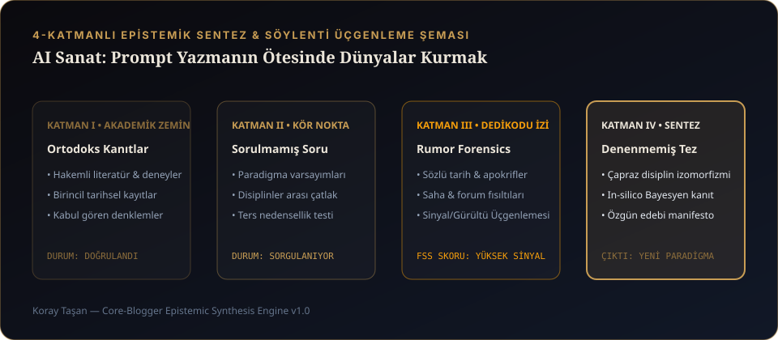

Herkesin dilinde aynı tartışma var: "Yapay zekâ ile üretilen görsel sanat mıdır, değil midir?" Bana sorarsanız soru baştan yanlış. Yapay zekâ çağında "insanın özgünlüğü nedir?" diye düşünmek, insanı teknolojiyle yarıştırmak değil; bu soğuk ekranların ortasında insan olmanın hâlâ ne anlama geldiğini sormaktır.
İlk başta yapay zekâ benim için de diğerleri gibi bir araçtı. Ama bir gece ekranın karşısında şunu fark ettim: Bir görüntü oluşturuyorsun, bakıyorsun. Oradaki sensin; ama hatırladığın sen değil. Bir ses üretiyorsun, dinliyorsun. Sana ait değil; ama tamamen yabancı da değil. Ve ben o aradaki şeyi sevdim. Çünkü hayatım boyunca bir şeyin ne olması gerektiğiyle, ne olabileceği arasındaki o tekinsiz boşlukla ilgilendim.

1. "Oradaki Sensin, Ama Hatırladığın Sen Değil": O Aradaki Şeyi Sevmek
Eğer bir kutuya "cyberpunk girl, neon lights, 8k, masterpiece" yazıp Enter'a basmayı sanat sanıyorsanız, size kötü bir haberim var: Bunu ben bile tek tuşla yapabiliyorsam, o şey o kadar da kıymetli değildir. Sanat, makinenin sana ilk sunduğu o cilalı, itaatkâr ortalamayı reddettiğin anda başlar. Sanat; o görselin arkasına bir yasa, bir yara, bir coğrafya ve söylenmemiş bir hakikat yerleştirdiğinde doğar.
2. Plastik Kusursuzluk Hastalığı ve Neden Bazen Floresan Işığı Ay Işığından Daha Doğrudur?
Üretken yapay zekâ modellerinin (Midjourney, Flux, Stable Diffusion) en büyük zaafı "fazla güzel" olmalarıdır. Her cilt pürüzsüz, her ışık altın saatinde, her simetri cetvelle çizilmiş gibidir. Oysa gerçek hayat—ve gerçek sinema—kusurludur. Bazen hastane koridorundaki o titreyen soğuk floresan ışığı, romantik bir ay ışığından çok daha doğrudur.
Bu yüzden kendi görsel üretim boru hatlarımızda yapay zekânın o plastik cilasını kırmak için tersine mühendislik uyguluyoruz: Görüntüye kasıtlı olarak anamorfik kenar bükülmeleri, Caravaggio usulü sert chiaroscuro gölge keskinliği, oksitlenmiş tunç dokusu ve Kodak Vision3 500T 35mm film greni enjekte ediyoruz.
3. MithyLeaks: Medusa'nın Kesik Başından Üç Dilli (TR / EN / LT) Edebi Arkeolojiye
Bunun en somut örneği MithyLeaks projemizdir. Mitolojide bize hep aynı resmi tarih anlatıldı: Perseus gitti, canavar Medusa'nın başını kesti, Athena da o başı kalkanına taktı. Peki ama neden?
"Tanrılar insanların başına gelenleri anlatmayı severler; fakat kendi yaptıklarının nedenlerini anlatmakta her zaman bu kadar cömert değildirler. Bu yüzden bazı hikâyeler bize eksik ulaşır... Ve bütün bunlar doğru olabilir. Yalnızca gerçek olmayabilir. Çünkü hakikat, olan şeyden daha büyüktür."
— MithyLeaks / Dosya 001: MEDUSA
MithyLeaks'i tasarlarken sadece bir öykü yazmadık. Tapınağın gölgeli tarafında büyüyen Yusuf'un gözünden, Medusa'nın canavarlaştırılmadan önceki insan yüzünü anlatan 14 bölümlük bir arşiv kurduk. Ve bu arşivin zamansızlığını hissettirmek için metni yalnızca Türkçe ve İngilizce değil, taş yazıtların dili olan Klasik Latince (Latina) ile üç dilli olarak inşa ettik. Arkasında hiçbir ağır web framework'ü olmadan, kendi yazdığımız build_site.py derleyicisiyle üç elyazmasını (medusa-tr.md, medusa-en.md, medusa-la.md) tek bir anıtsal sayfada birleştirdik.
4. SUSSUZ: Ankara Eryaman'dan Sanal Setlere Bir Dünyanın Mimarisini Çizmek
Bir diğer uçta ise SUSSUZ duruyor. Yıllarca müşterilere çaktırmadan reklamların içine küçük dünyalar kurduktan sonra, kendi sinema evrenimi kurduğum yer. Ankara Sussuz ve Eryaman hattında geçen; Murat, Ekrem, Kenan ve Bahar'ın hikâyesini anlatan bu dünyada AI sanatını tek başına bir illüstrasyon olarak değil; 3D mekânsal gece haritaları, Unreal Engine 5 sanal setleri ve khrysaor / SUSSUZ Soundtracks (Bataklık, Hırsız) ile nefes alan bütüncül bir atmosfer olarak kullandık.
Best Backgrounds kanalımız için Leonardo da Vinci, Rembrandt, Van Gogh ve Monet'nin 20'şer kamu malı müze tablosunu Samsung Frame TV standardında (3840x2160) restore ederken büyük bir tuzakla karşılaştık: Standart AI upscaler modelleri, yağlıboya tablodaki ince vernik çatlaklarını (craquelure) "gürültü" sanıp ütülüyor ve Leonardo'nun sfumato dumanını plastik bir vektöre çeviriyordu! Çözüm olarak frekans ayrıştırma (Frequency Separation) tabanlı bir restorasyon hattı kurduk: Düşük frekanslı renk geçişlerini korurken, yüksek frekanslı fırça darbesi ve tuval dokusunu orijinal müze taramasından geri harmanladık.